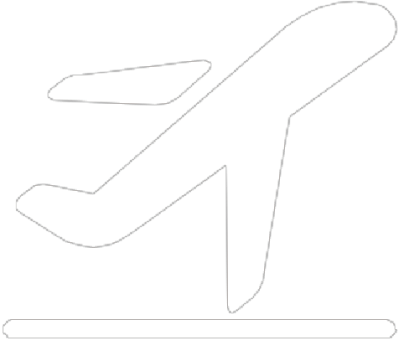

|  |
離境 / Departures |
||||||
| 時間Time | 目的地Destination | 航空公司Airlines | 班次Flight No. | 航廈Term. | 登機門Gate | 備註Remarks | Page1 |
| 時間Time | 目的地Destination | 航空公司Airlines | 班次Flight No. | 航廈Term. | 登機門Gate | 備註Remarks | Page2 |
| 22:40 | 曼谷Bangkok(BKK) | 中華航空 | CI 837 | T1 | A9 | 最後呼叫 Last Call |
| 22:40 | 曼谷Bangkok(BKK) | 曼谷航空 | PG4906 | T1 | A9 | 登機中 Boarding |
| 23:00 | 布里斯本Brisbane | 長榮航空 | BR 315 | T1 | A10 | 登機中 Boarding |
| 23:15 | 維也納Vienna | 中華航空 | CI 63 | T1 | A8 | 登機中 Boarding |
| 23:20 | 法蘭克福Frankfurt | 中華航空 | CI 61 | T1 | D6 | 準時 On Time | 22:50 |
| 23:25 | 溫哥華Vancouver | 中華航空 | CI 32 | T1 | D7 | 準時 On Time | 22:50 |
| 23:25 | 溫哥華Vancouver | 越南航空 | VN2034 | T1 | D6 | 準時 On Time | 22:55 |
| 23:30 | 雪梨Sydeny | 中華航空 | CI 51 | T1 | D7 | 準時 On Time | 22:55 |
| 23:30 | 維也納Vienna | 長榮航空 | BR 65 | T1 | D4 | 準時 On Time | 22:55 |
| 23:30 | 舊金山San Francisco | 長榮航空 | BR 28 | T1 | D3 | 準時 On Time | 23:00 |
| 23:30 | 舊金山San Francisco | 巴拿馬航 | CM8013 | T1 | D5 | 準時 On Time | 23:00 |
| 23:30 | 舊金山San Francisco | 新加坡航 | SQ5828 | T1 | D2 | 準時 On Time | 23:10 |
| 23:30 | 舊金山San Francisco | 哥倫比亞 | AV4507 | T1 | D1 | 準時 On Time | 23:10 |
| 23:30 | 雪梨Sydeny | 法國航空 | AF4160 | T1 | D8 | 準時 On Time | 23:15 |
| 23:30 | 雪梨Sydeny | 荷蘭航空 | KL4991 | T1 | D9 | 取消 Cancelled | 23:15 |
| 23:40 | 維也納Vienna | 中華航空 | CI 63 | T1 | D3 | 取消 Cancelled | 23:15 |
| 23:40 | 舊金山San Francisco | 長榮航空 | BR 28 | T1 | D2 | 取消 Cancelled | 23:20 |
| 23:20 | 法蘭克福Frankfurt | 中華航空 | CI 61 | T1 | D1 | 取消 Cancelled | 23:20 |
| 22:40 | 曼谷Bangkok(BKK) | 中華航空 | CI 837 | T1 | A9 | 最後呼叫 Last Call |
| 22:40 | 曼谷Bangkok(BKK) | 曼谷航空 | PG4906 | T1 | A9 | 登機中 Boarding |
| 23:00 | 布里斯本Brisbane | 長榮航空 | BR 315 | T1 | A10 | 登機中 Boarding |
| 23:15 | 維也納Vienna | 中華航空 | CI 63 | T1 | A8 | 登機中 Boarding |
| 23:20 | 法蘭克福Frankfurt | 中華航空 | CI 61 | T1 | D6 | 準時 On Time | 22:50 |
| 23:25 | 溫哥華Vancouver | 中華航空 | CI 32 | T1 | D7 | 準時 On Time | 22:50 |
| 23:25 | 溫哥華Vancouver | 越南航空 | VN2034 | T1 | D6 | 準時 On Time | 22:55 |
| 23:30 | 雪梨Sydeny | 中華航空 | CI 51 | T1 | D7 | 準時 On Time | 22:55 |
| 23:30 | 維也納Vienna | 長榮航空 | BR 65 | T1 | D4 | 準時 On Time | 22:55 |
| 23:30 | 舊金山San Francisco | 長榮航空 | BR 28 | T1 | D3 | 準時 On Time | 23:00 |
| 23:30 | 舊金山San Francisco | 巴拿馬航 | CM8013 | T1 | D5 | 準時 On Time | 23:00 |
| 23:30 | 舊金山San Francisco | 新加坡航 | SQ5828 | T1 | D2 | 準時 On Time | 23:10 |
| 23:30 | 舊金山San Francisco | 哥倫比亞 | AV4507 | T1 | D1 | 準時 On Time | 23:10 |
| 23:30 | 雪梨Sydeny | 法國航空 | AF4160 | T1 | D8 | 準時 On Time | 23:15 |
| 23:30 | 雪梨Sydeny | 荷蘭航空 | KL4991 | T1 | D9 | 取消 Cancelled | 23:15 |
| 23:40 | 維也納Vienna | 中華航空 | CI 63 | T1 | D3 | 取消 Cancelled | 23:15 |
| 23:40 | 舊金山San Francisco | 長榮航空 | BR 28 | T1 | D2 | 取消 Cancelled | 23:20 |
| 23:20 | 法蘭克福Frankfurt | 中華航空 | CI 61 | T1 | D1 | 取消 Cancelled | 23:20 |